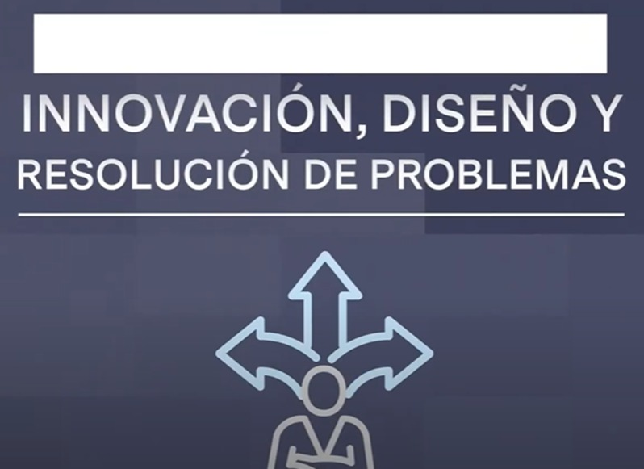

Dominar el concepto de desigualdades en matemáticas es esencial para resolver una amplia variedad de problemas, desde la resolución de ecuaciones hasta la optimización de funciones en el cálculo. La comprensión de las desigualdades permite a los estudiantes analizar y modelar situaciones del mundo real, así como desarrollar habilidades críticas de razonamiento y resolución de problemas.
Matemáticas
Competencia 7
Innovación, diseño y resolución de problemas